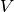
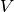
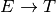
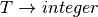

7. Pushdown Automata¶
In this chapter we cover parsing as well as pushdown automata. One of the topics Linz does not cover is on the construction of a pushdown automaton from a context-free grammar. To begin, we must build the automaton which is called an LR0 machine for a grammar .
7.1. Nondeterminstic Pushdown Automata¶
From a theoretical standpoint, nondeterministic pushdown automata are capable of recognizing context-free languages. However, from a practical standpoint they are of little interest. Nevertheless, the implementation of a nondeterministic pushdown automaton helps to illustrate how search can be implemented both recursively and iteratively. The code listing below contains two versions of the accepts method, the first (commented out) is the recursive version with an acceptsSuffix nested function much like the nondeterministic NFA from chapter 2. The second version of accepts is an iterative version which maintains a stack of unexplored instantaneous descriptions.
1 2 3 4 5 6 7 8 9 10 11 12 13 14 15 16 17 18 19 20 21 22 23 24 25 26 27 28 29 30 31 32 33 34 35 36 37 38 39 40 41 42 43 44 45 46 47 48 49 50 51 52 53 54 55 56 57 58 59 60 61 62 63 64 65 66 67 68 69 70 71 72 73 74 75 76 77 78 79 80 81 82 83 84 85 86 87 88 89 90 91 92 93 94 95 96 97 98 99 100 101 102 103 104 105 106 107 108 109 110 111 112 113 114 115 116 117 118 119 120 121 122 123 124 125 126 127 128 129 130 131 132 133 134 135 136 137 138 139 140 141 142 143 144 145 146 147 148 149 150 151 152 153 154 155 156 157 158 159 160 161 | import streamreader
import io
import copy
import stack
epsilon = ""
class NPDA:
def __init__(self, delta, startStateId, stackStartSym, finalStates):
self.delta = delta
self.startStateId = startStateId
self.stackStartSym = stackStartSym
self.finalStates = finalStates
# This is a working recursive version of accepts
#def accepts(self,strm):
#def matchTop(aStackTop, stack):
#return stack[-1] == aStackTop
#def getTransitions(stateId, stack):
#transitionList = []
#for aStateId, anInputSym, aStackTop in self.delta.keys():
#if stateId == aStateId and matchTop(aStackTop, stack):
#transitionList.append((anInputSym, aStackTop))
#return transitionList
#def popPush(aStackTop, pushOnStack, stack):
#newstack = stack[:]
#for x in aStackTop:
#newstack.pop()
#for x in pushOnStack[::-1]:
#newstack.append(x)
#return newstack
#def acceptsSuffix(stateId, stack):
#c = strm.readChar()
##print(stateId, c, stack)
#if strm.eof() and stateId in self.finalStates:
##print(stateId)
#return True
#strm.unreadChar(c)
#for anInputSym, aStackTop in getTransitions(stateId, stack):
#for toStateId, pushOnStack in self.delta[(stateId, anInputSym, aStackTop)]:
#if anInputSym == epsilon and acceptsSuffix(toStateId,popPush(aStackTop,pushOnStack,stack)):
#return True
#else: # not an epsilon transition
#c = strm.readChar()
#if c == anInputSym and acceptsSuffix(toStateId,popPush(aStackTop,pushOnStack,stack)):
#return True
#strm.unreadChar(c)
#return False
#return acceptsSuffix(self.startStateId, [self.stackStartSym])
# This is an iterative version of accepts that works. It maintains
# a stack of instantaneous descriptions that have yet to be explored.
def accepts(self,strm):
def matchTop(aStackTop, stack):
return stack[-1] == aStackTop
def getTransitions(stateId, stack):
transitionList = []
for aStateId, anInputSym, aStackTop in self.delta.keys():
if stateId == aStateId and matchTop(aStackTop, stack):
transitionList.append((anInputSym, aStackTop))
return transitionList
def popPush(aStackTop, pushOnStack, stack):
newstack = stack[:]
for x in aStackTop:
newstack.pop()
for x in pushOnStack[::-1]:
newstack.append(x)
return newstack
stateId = self.startStateId
pdaStack = [self.stackStartSym]
# This is the instantaneous description stack. It starts with the start state
# instantaneous description.
ID = stack.Stack()
ID.push((stateId,strm,pdaStack))
while not ID.isEmpty():
stateId, strm, pdaStack = ID.pop()
print((stateId, strm, pdaStack))
c = strm.readChar()
if strm.eof() and stateId in self.finalStates:
return True
strm.unreadChar(c)
for anInputSym, aStackTop in getTransitions(stateId, pdaStack):
for toStateId, pushOnStack in self.delta[(stateId, anInputSym, aStackTop)]:
if anInputSym == epsilon:
ID.push((toStateId,copy.deepcopy(strm),popPush(aStackTop,pushOnStack,pdaStack)))
else: # not an epsilon transition
c = strm.readChar()
if c == anInputSym:
ID.push((toStateId,copy.deepcopy(strm),popPush(aStackTop,pushOnStack,pdaStack)))
strm.unreadChar(c)
return False
def main():
delta = {}
# delta[(statedId, inputsym, stacktop)] = (newstateid, stacktop')
#This is a^n b^n
#delta[(0, "a", "0")] = set([(1,"10")])
#delta[(0, epsilon, "0")] = set([(3, "")])
#delta[(1,"a","1")] = set([(1,"11")])
#delta[(1,"b","1")] = set([(2,"")])
#delta[(2,"b","1")] = set([(2,"")])
#delta[(2,epsilon,"0")] = set([(3,"")])
#npda = NPDA(delta,0,"0",set([3]))
#This is ww^R the a word with its reverse appended. Language of a's and b's.
delta[(0,"a","a")] = set([(0,"aa")])
delta[(0,"b","a")] = set([(0,"ba")])
delta[(0,"a","b")] = set([(0,"ab")])
delta[(0,"b","b")] = set([(0,"bb")])
delta[(0,"a","z")] = set([(0,"az")])
delta[(0,"b","z")] = set([(0,"bz")])
delta[(0,epsilon,"a")] = set([(1,"a")])
delta[(0,epsilon,"b")] = set([(1,"b")])
delta[(1,"a","a")] = set([(1,"")])
delta[(1,"b","b")] = set([(1,"")])
delta[(1,epsilon,"z")] = set([(2,"z")])
npda = NPDA(delta,0,"z",set([2]))
x = input("Please enter a string of a's and b's: ")
if npda.accepts(streamreader.StreamReader(io.StringIO(x))):
print("Yes, in the language.")
else:
print("Nope! Not in the language.")
if __name__ == "__main__":
main()
|
7.2. LL(1) Grammars¶
LL(1) grammars are grammars that can be used to determinitically build a left-most derivation of a word, w, by looking ahead at the next symbol of w. Consider the grammar of prefix expressions.
To construct a parser for such a language, we can build a series of functions, one for each nonterminal. Each nonterminal, in this case E, becomes a function in an LL(1) parser. The body of the function is given by the right hand side (rhs) of each of its productions. For instance, in this case we get a token and if it is a ‘+’ we call the E function two more times.
7.3. LALR(1) Grammars¶
An LALR(1) grammar is a grammar that is suitable for deterministic parsing using one symbol of lookahead to deterministically make choices with the pushdown automaton. An example of an LALR(1) grammar is the list expression grammar.
7.4. Building the LR0 Machine¶
To build the LR0 machine we consider the productions of a context-free grammar and build what are called item sets. An item is a production with a dot (i.e. period) placed somewhere on the right hand side (rhs) of the production.
We start by first augmenting the grammar to include one more production of where eof stands for end of file. Sometimes the pound sign (i.e. #) is used to represent eof in the literature on this construction. Then we start the construction of LR0 machine with the item . For each new item we call the  function on it to add any other items that belong to the same state of the LR0 machine. If results in a new LR0 State, then the state is added to the LR0 Machine and added to the stack of unexplored states. The first unexplored state is
function on it to add any other items that belong to the same state of the LR0 machine. If results in a new LR0 State, then the state is added to the LR0 Machine and added to the stack of unexplored states. The first unexplored state is
7.4.1. The Completion Function¶
The Completion or closure function adds items to an item set to complete an item set. Completion is given an item set and completes it by examining each item of the form . To this item set, each item of the form is added, .
7.4.2. The Successor Function¶
For the completed item set in an LR0 state, the Successor function builds a set of next LR0 states. Assume in an item associated with some LR0 state  . Then there is a transition from to a state  containing the item . Again, .
. Then there is a transition from to a state  containing the item . Again, .
The algorithm for building the LR0 machine proceeds by finding all the successors of an LR0 State. If any of these successors are new states, they are added to the stack of unexplored states. This stack is popped repeatedly finding successors for the unexplored states until the stack is empty.
Fig. 1: The List Expression LR(0) Machine with Lookahead Sets
7.5. The LR0State Class and its Components¶
The code for LR0 States includes an LR0State class. Each LR0State is composed of one or more LR0Items. Each LR0Item is a Production with a dot on the right hand side. The classes for all three: LR0State, LR0Item, and Production are all included in the code here.
7.6. Computing Lookahead Sets¶
Lookahead sets can be computed using the algorithm presented in a paper titled “Methods for Computing LALR(k) Lookahead” by Bent Bruun Kristensen and Ole Lehrmann Madsen of Aarhus University, ACM Transactions on Programming Languages and Systems, Vol. 3, No. 1, January 1981, Pages 60-82. This paper can be found in the ACM Digital Library and a copy is available for my students.
7.7. Running the LALR(1) Machine¶
A bottom-up parser for an LALR(1) language is a deterministic pushdown automaton. The parser constructs a right-most derivation of a sentence in reverse order. Consider the list expression 3::[1,2]. A right-most derivation for this sentence is given below (using the augmented grammar).
You can think of their being a dot that moves from left to right through the sentence. All items to the left of the dot are shifted onto the PDA stack. The items to the right of the dot must be read yet. The dot starts at the left hand side of the sentence and ends at the right hand side of the sentence. The dot corresponds to the dot in the items of the LR(0) machine.
The machine proceeds by starting in state 0 and following transitions when it can to shift items onto the stack. Shift is one of the two operations of the parser. When no shift is possible in a state, given the next input symbol, then a reduce operation occurs if the next input symbol is in a lookahead set. The reduce operation is described below.
The machine starts by pushing the state identifier and the Goal identifier onto the stack as a tuple. Then it proceeds as follows looping until the accepting state is found.
- Peek at the top of the stack to find the (stateId, RHS symbol) pair.
- If a token is needed then get a token from the scanner.
- Examine the token and the current state to determine if there is a transition on the token to a new state. If so, then push the (new stateid, token) pair onto the stack. This is called a shift operation.
- If there is no transition from the given state on the given token, then look for an item with a lookahead set containing the item. If an LR(0) item is found whose lookahead set contains the token, then reduce by popping the length of the right hand side of the item from the stack. Then peek at the top of the stack to see what state is now one top. Do a transition from that state on the LHS of the item by which you are reducing. Push that (newStateId, LHS) onto the stack.
A parser constructed in such a way can answer yes or no as to the membership of a sentence in the language of a grammar. More interestingly, an abstract syntax tree can be built by evaluating a return value for each reduction that occurs in the parsing of a sentence. The code below provides an outline for the parser code along with a method called {em buildReturnValue} that builds value for the return value of a parser.
7.8. Exercises¶
Using the prefix grammar presented in this chapter, build a parser for prefix expressions that returns an abstract syntax tree of an expression. Then, traverse the abstract syntax tree to print the postfix form of that expression.
To complete this program you must build an LL(1) parser along with classes for the abstract syntax tree nodes of expressions. Write an eval method for each node in your abstract syntax tree that when called builds a string of the postfix expression. So your program should use a StreamReader over the string entered by the user to get the tokens of the string. The parser is called to parse the entered input and the parser should return an abstract syntax tree of the expression. Then eval is called on your abstract syntax tree to build the postfix expression which is then printed.
For the following grammar, generate the LR0 machine by generating each item set for each state of the machine. Then identify the transitions of the machine in table form where rows are the state identifiers and columns are the various vocabulary symbols. Be sure to augment the grammar first!
- 
- 
Complete the calculator project which can be downloaded here. This project is an infix calculator with one memory location. The primary purpose of this project is to implement the scanner and the parser (i.e. pushdown automaton). The project gives you the finite state machine and the LALR(1) machine. Your job is only to write the getToken method of the scanner and the parse method of the parser. You can do this incrementally, writing the getToken method first, if you change the calculator.py main function to create the scanner and then construct a while loop to get all the tokens from the input until you encounter the EOF (endoffile) token.
The finite state machine of the scanner and the LR0 Machine with lookaheads is provided below for your reference but is already provided in the project download as coded in both calcscanner.py and calcparser.py. Interacting with the calculator works like this.
Here is the Finite State Machine of the Scanner and the LR0 Machine with Lookaheads of the parser.